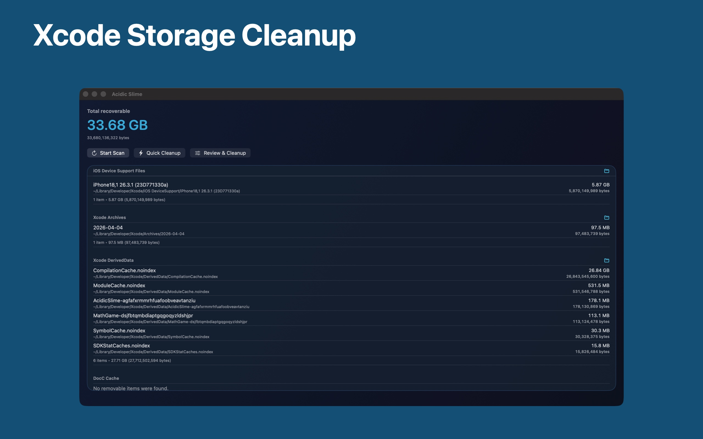
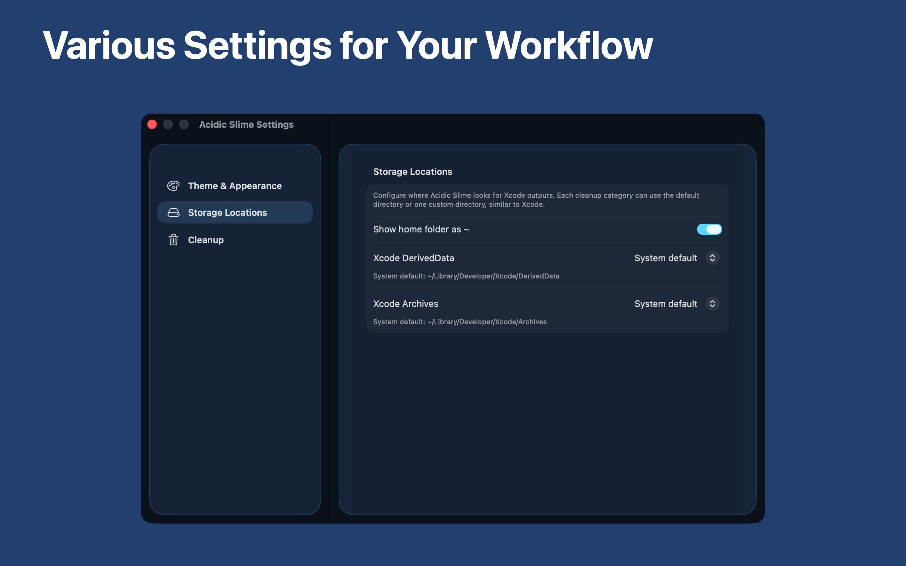

Fast storage scan
Check DerivedData, Archives, Device Support, simulator data, logs, and other heavy directories in one view, with each DerivedData folder shown by its Xcode project name.
Cache cleaner for Xcode
Overview
Check DerivedData, Archives, Device Support, simulator data, logs, and other heavy directories in one view, with each DerivedData folder shown by its Xcode project name.
Use Quick Clean for speed, with a preview of every item and its size before anything is removed, or Review & Clean for item-level control.
Turn on auto-clean when Xcode quits, run scans and cleanups from Shortcuts, and look back at what was reclaimed in Cleanup History.
Screenshots
See reclaimable space, run scans, and start cleanup from one calm interface.

Adjust appearance and folder locations to match your own Xcode workflow.
